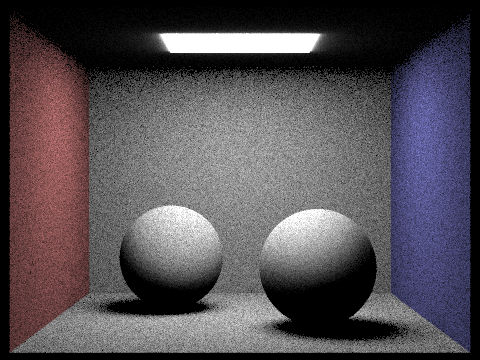

Project 3-1: PathTracer
CS 184: Computer Graphics and Imaging, Spring 2023
Shannon Bonet & Ace Chen
Overview
In this project, we implemented the components of a path tracing program, which allows us to render scenes with physical lighting and thus more realistic imaging results.
First, we generated rays by transforming image coordinates to camera to world space. We then checked for bounding box intersections that we eventually used while traversing a KD tree of geometric primitives to speed up rendering. Next, we computed the values of our rays by summing direct and indirect lighting to produce a global illumination effect. Finally, we added adaptive sampling to help eliminate noise.
I (shannon) have personally never taken a physics or linear algebra course, so completing this project really opened my eyes and made me curious about the underlying mechanisms of the physical world. Overall, this project was way too tedius for us but we learned so much along the way.
Ray Generation + Primitive Intersection
Walk through the ray generation and primitive intersection parts of the rendering pipeline
We were able to generate camera rays by transforming image coordinates to camera space, creating a ray, then transforming it into a ray in the world space. This is known as a ray tracing technique that appiles lighting to an object. Next, we want to check whether a ray intersects a surface.
Explain the triangle intersection algorithm you implemented in your own words.
For triangle intersection, we used the Moller Trumbore algorithm, which takes the 3 coordinates of the triangle and its barycentirc coordinates to tell us whether a ray hits any space inside the triangle. If the time of intersection occurs between a ray’s minimum and maximum times and its barycentric coordinates are valid, then we know an intersection exists.
For sphere intersection, we apply a similar logic but use the circle’s origin and radius to solve for time of intersection.
Show images with normal shading for a few small .dae files.
BVH Construction
Walk through your BVH construction algorithm. Explain the heuristic you chose for picking the splitting point.
Rendering more complex scenes can take a very long time. So far, our implemention checks for rays against every object, even if the ray doesn’t intersect the object. We can speed up this process by implementing a bounding volume hiearchy which uses the tree data structure to speed up rendering.
We constructed our BVH by creating a bounding box for each node, and splitting the box using its centroid sum as suggested. We register whether a node is a leaf node if its list of primitives is less than or equal to the max_leaf_size. If not, we partition our list of primitives using the centroid sum as the split value. We handle 3 cases for each of the x, y, or z axes we could be aligning on, and then select the new middle to the result of our partition. We ensures our list of primitives stays sorted from left to right in each in consecutive recursive call by setting this new middle as the new
start for node->right, and as usual for node->left.
Show images with normal shading for a few large .dae files that you can only render with BVH acceleration.
Direct Illumination
Walk through both implementations of the direct lighting function.
To implement direct lightning, we first implemented the diffuse BSDF and zero bounce illumination. The diffuse BSDF divides the albedo by a factor of PI, regardless of the incident or outgoing light directions. Zero bounce radiance simply returns the emissive spectrum of whatever BSDF is associated with the intersection.
For uniform hemisphere sampling, we approximated the light arriving at an intersection point using a Monte Carlo estimator:
- For however many samples we need, we sample from
hemisphereSamplerto generate an incoming ray direction. We convert it world space generate a new incoming ray from originhit_p(and set itsmin_tto the epsilon constant). - Then, we check if that new ray intersects with a light source. If it does, we multiply the emission at the intersection by
f(wi->wo)and the cosine of the sample and add this value to our running light estimate, as shown in the reflection equation. - Finally, after all samples are added, we divide by the
PDF, average by num_samples, and return.
For importance sampling, we also traverse each light in the scene:
- If it is point light source we sample once; otherwise, we sample
ns_area_lighttimes. - Each time, we sample the light at
hit_pto generatewi(direction betweenhit_pand light source), the distance to the light, and thepdfevaltuated atwi. We then use that sample to generate a ‘shadow ray’ fromhit_pin thewidirection and set its min toEPSand max to the distance minusEPS. - To calculate
f(wi->wo)and cos theta, we convertwito object space. If we find that the light is not behind the surface and the shadow ray does not intersect anything, then we similarly calculate our estimate (emission weighed byf(wi->wo)and cosine). We divide it by the generatedpdfand add it to our running estimate. For area lights, we average out the running sum of area light estimates before adding it to the overall estimate. We then divide by the overallPDFand return.
Focus on one particular scene with at least one area light and compare the noise levels in soft shadows when rendering with 1, 4, 16, and 64 light rays (the -l flag) and with 1 sample per pixel (the -s flag) using light sampling, not uniform hemisphere sampling.
|
|
|
|
|
|
In importance sampling, we see significant noise reduction with additional light rays. We especially see this around the shadow of the bunny. With only 1 ray, noise would extend to the back of the cornell box; as more rays are added, we see the shadow center in closer to the bunny and soften as it gets further away. You can also see the shadows along the walls soften and get much less noisy as the rays increase, eventually giving the impression of smooth red, gray, and blue walls. As the number of rays increase, light sampling is able to create a more accurate estimate of reflected light – there is lower variance, so there is less generated noise.
Compare the results between uniform hemisphere sampling and lighting sampling in a one-paragraph analysis.
| Uniform Hemisphere Sampling | Light Sampling |
|---|---|
|
|
|
|

|
|
Uniform hemisphere sampling is noisier overall compared to lighting sampling because it samples the area indiscriminately. Light sampling is able to generate a more visually accurate estimate by generating ‘shadow rays’ and focusing on sampling areas where light is reflected. Even with similar parameters / number of rays, light sampling creates softer, smoother shadows compared to hemisphere sampling because of its decreased variance and noise.
Global Illumination
Walk through your implementation of the indirect lighting function.
Indirect lighting is the light reflected from other surfaces, or not the direct light source. It can be computed by recursively casting a new ray from its hit point in a random direction. The effect is global illumination. We implemented global illumination by:
- Calling
one_bounce_radiance()to grab the direct lighting. In the end, the value of our resulting ray will a sum of direct and indirect lighting. - Initializing
emission_fsampleby callingisect.bdsfwhich setswito our sample direction and returnsf(wi -> wo) - If
max_ray_depth > 1, we cast a ray and make sure to set its min toEPS_Fdecrement its depth. We also set our termination rate a 0.65 to prevent infinite recursion. - If our ray doesn’t intersect the BVH, we accumulate
L_outwith the result of callingat_least_one_bounce_radianceon the new ray. We weigh the result with bdsf and cosine as in earlier problems, and divide by thepdfand our russian roulette termination probability of 0.65.
Pick one scene and compare rendered views first with only direct illumination, then only indirect illumination. Use 1024 samples per pixel.
For CBbunny.dae, compare rendered views with maxraydepth set to 0, 1, 2, 3, and 100 (the -m flag). Use 1024 samples per pixel.
|
|
|

|

|

Pick one scene and compare rendered views with various sample-per-pixel rates, including at least 1, 2, 4, 8, 16, 64, and 1024. Use 4 light rays.
|
|
|
|
|
|
|
|
|
Adaptive Sampling
Adaptive sampling changes the sample rate depending on how fast a pixel converges. We should take fewer samples of pixels that converge quickly, and take more samples in more concentrated areas.
We implemented adaptive sampling by updating our raytrace_pixel() function:
- Keep track of how many
samplesyou’re sampling, which we later replacenum_sampleswith when updating the radiance andsampleCounterBuffer - If
I <= maxTolorance * mean, then we stop sampling because we know the pixel has converged. - Otherwise, we update the number of samples taken at the pixel.
Pick two scenes and render them with at least 2048 samples per pixel. Show a good sampling rate image with clearly visible differences in sampling rate over various regions and pixels. Include both your sample rate image, which shows your how your adaptive sampling changes depending on which part of the image you are rendering, and your noise-free rendered result. Use 1 sample per light and at least 5 for max ray depth.